Understand your soil’s nutrients, pH, and structure to plan healthier harvests.
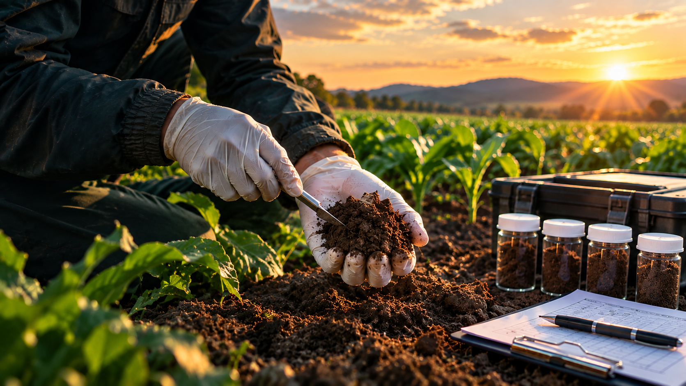
We empower farmers with sustainable practices, quality seeds, and modern technologies to cultivate abundant harvests, support communities, protect resources, and ensure global food security.
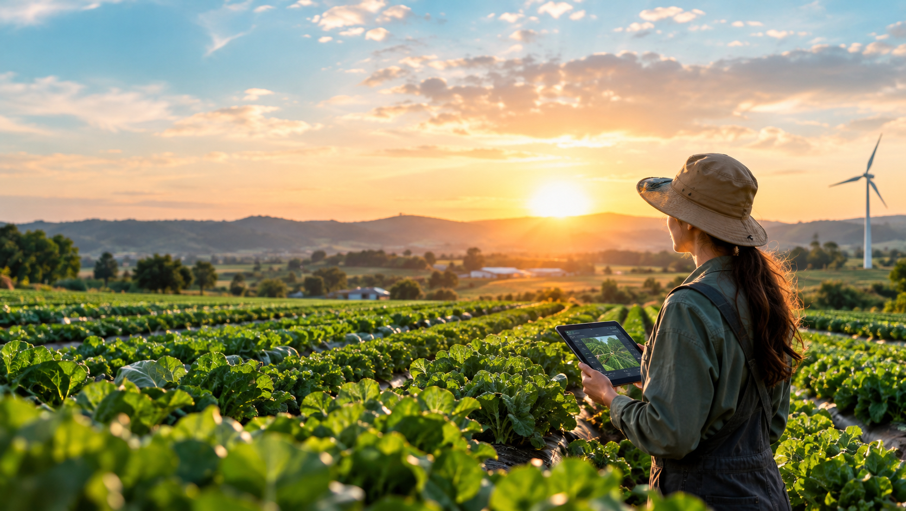
Wind and solar power keep our farms running sustainably while cutting emissions across every harvest.
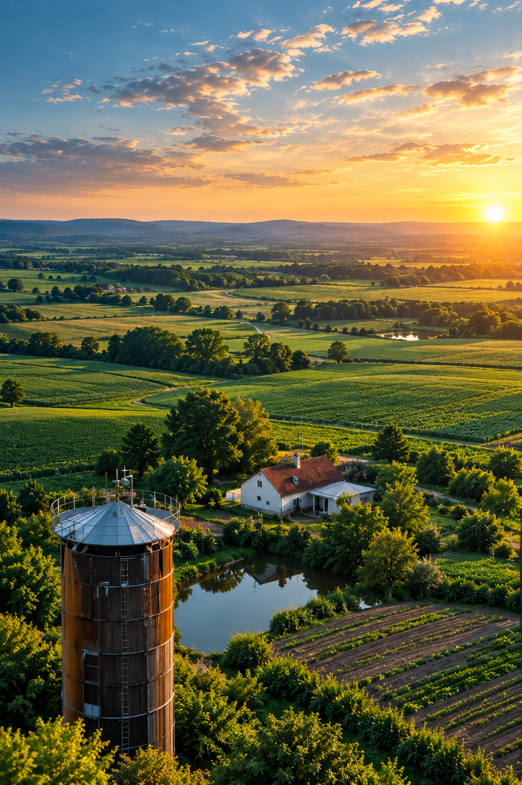
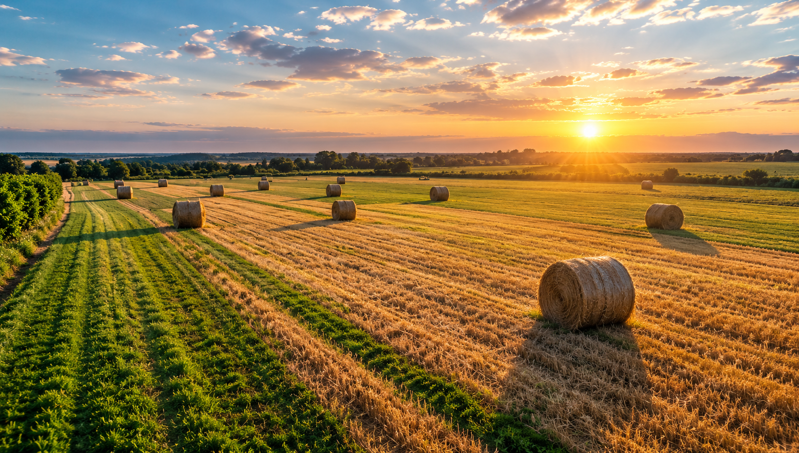
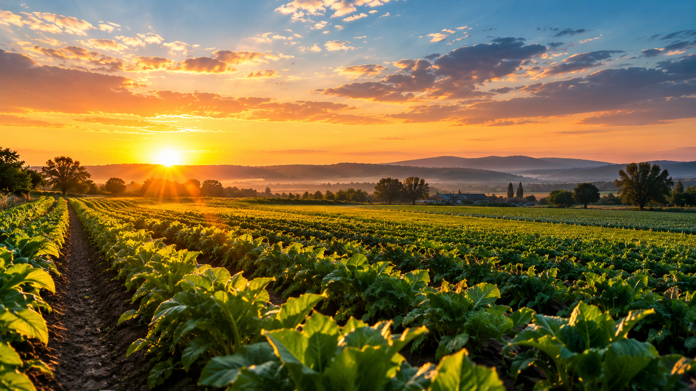
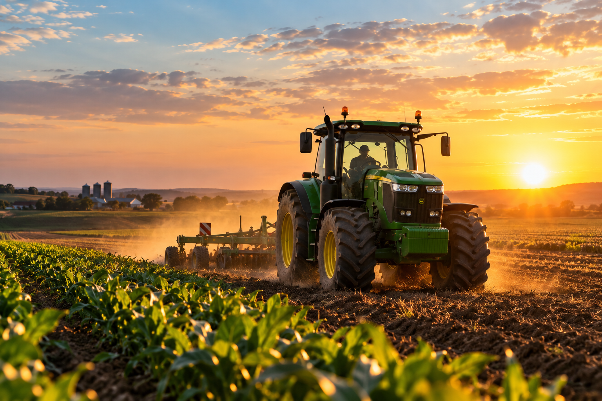
Our commitment to sustainable agriculture drives measurable results, building healthier ecosystems, stronger communities, and lasting prosperity
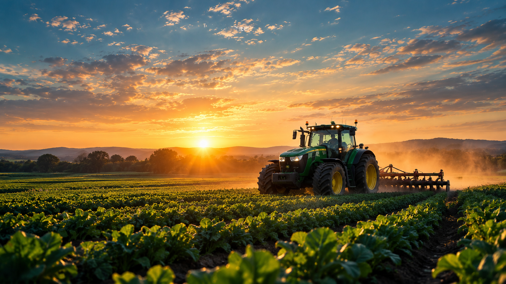
Founded with a passion for sustainable farming, Agro-Cultures has grown into a trusted partner for farmers worldwide. Since our inception, we’ve worked tirelessly to blend.
Sustaining our future through farming tradition.
From local harvests to global impact everywhere.
We are committed to empowering farmers with cutting-edge tools and knowledge, from developing drought-resistant seeds to promoting regenerative farming practices.
Innovative solutions shaping the future of farming.
Nurturing the land with farmer support always.

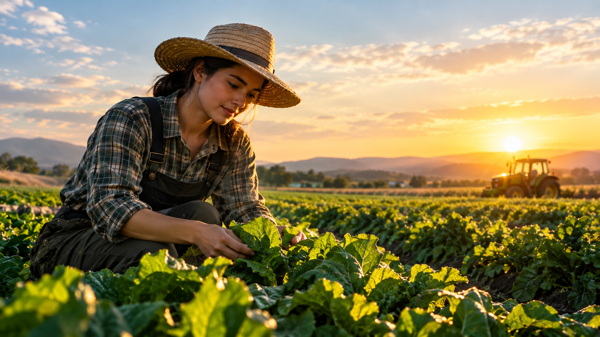
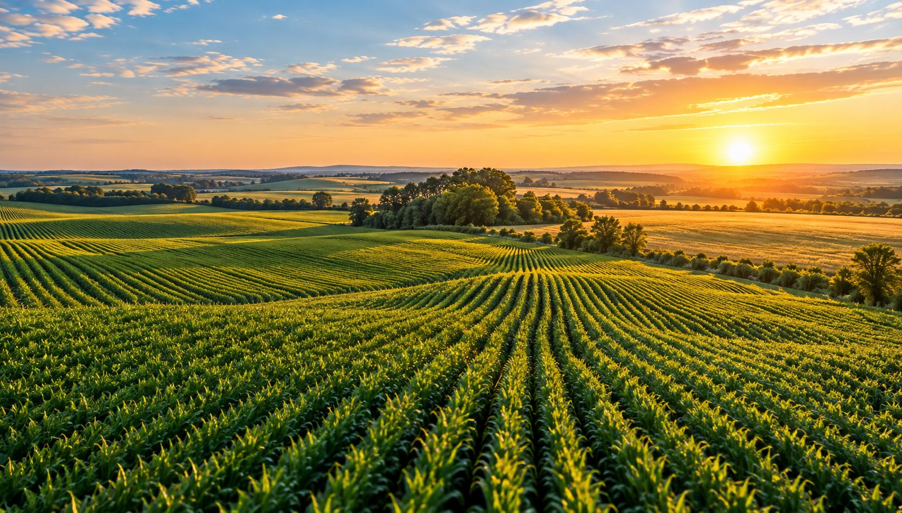
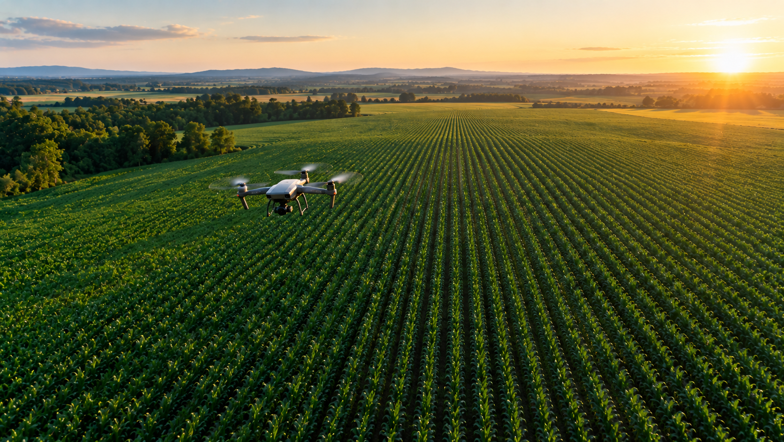
We provide a comprehensive suite of tailored services designed to optimize farming operations, enhance productivity, and promote environmentally sustainable practices for long-term agricultural success.
Our team combines advanced technology with practical expertise to deliver innovative solutions, empowering farmers to achieve efficiency, reduce costs, and build resilient agricultural systems for the future.
Get in TouchUnlock the full potential of your land today through our expert, reliable, advanced, and comprehensive soil testing services.
Understand your soil’s nutrients, pH, and structure to plan healthier harvests.

Use GPS, sensors, and drone data to plant, water, and harvest with precision.
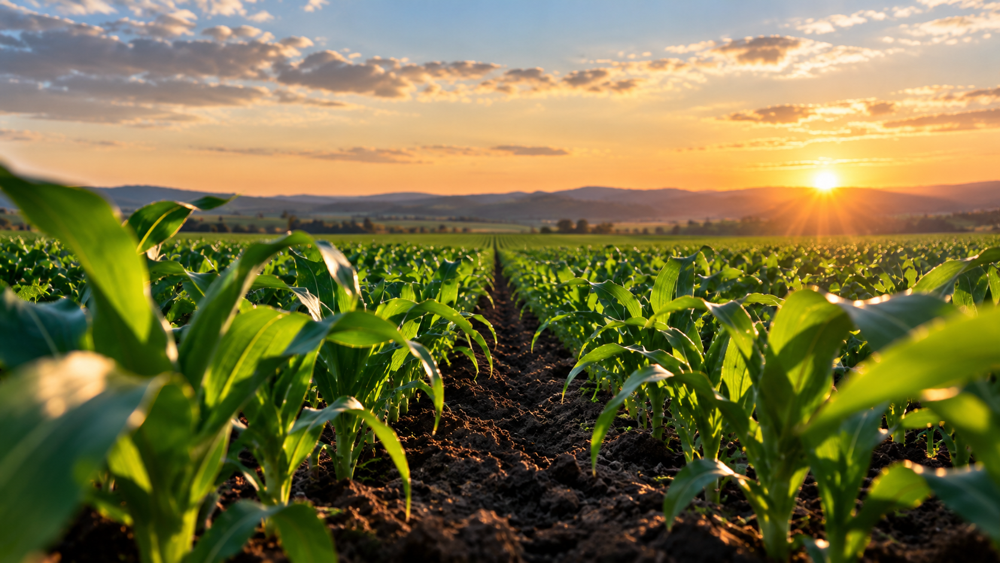
Get expert guidance on crop selection, rotation, and yield improvement.
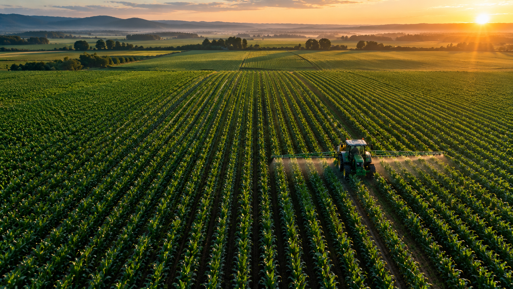
Get monthly updates on sustainable farming practices, new technologies, and stories from farms around the world.
Join thousands of farmers and growers who receive practical tips, seasonal guides, and exclusive offers straight to their inbox.
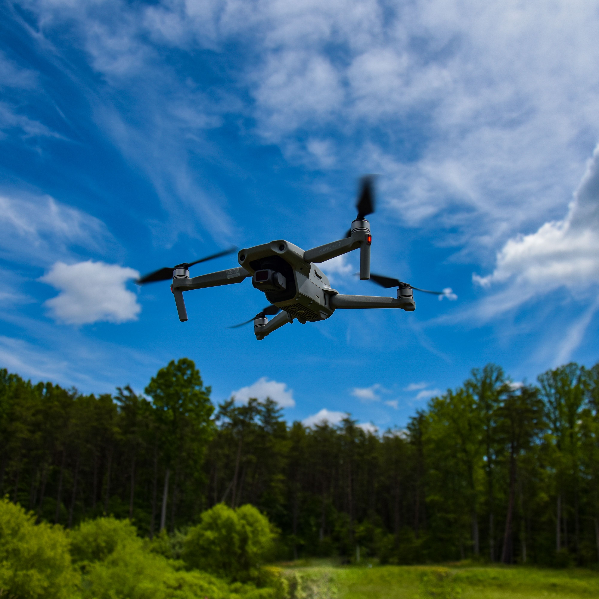
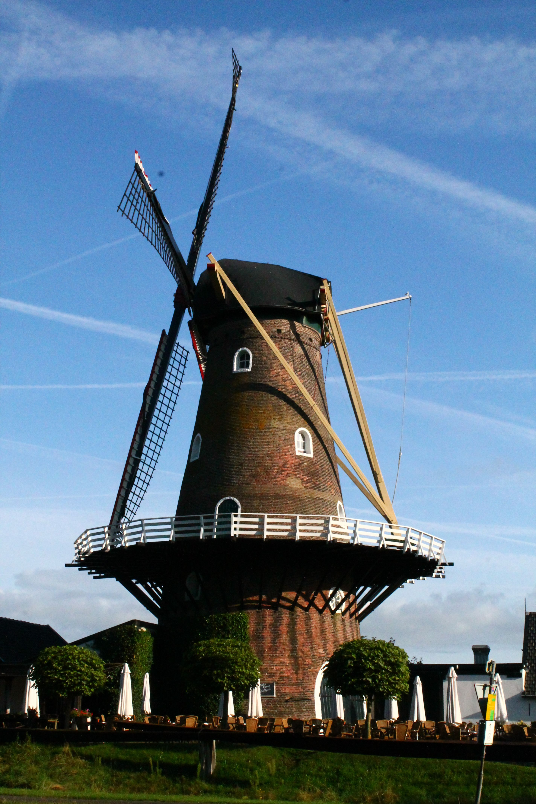